Gradient repairs and predictor learning curves
Read the explanation and experimental limits
what weighting means
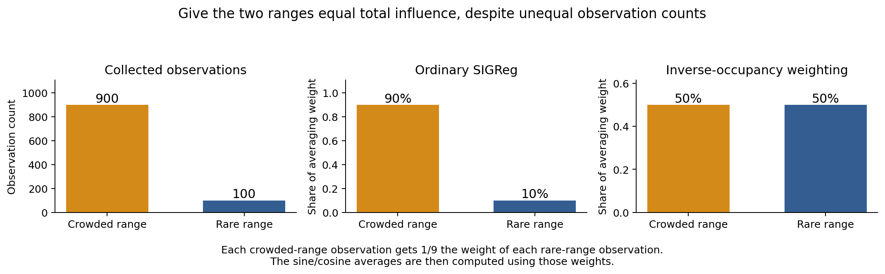
fold makes distances ambiguous
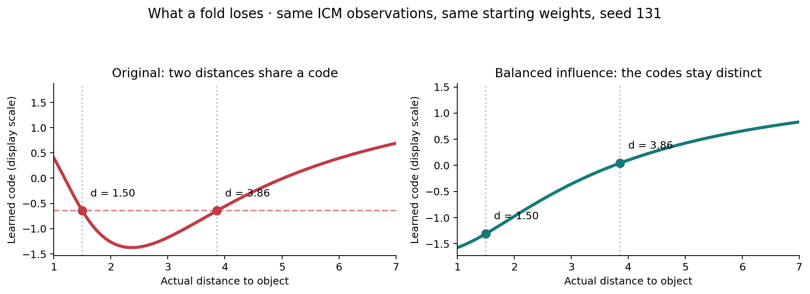
before and after actual repair
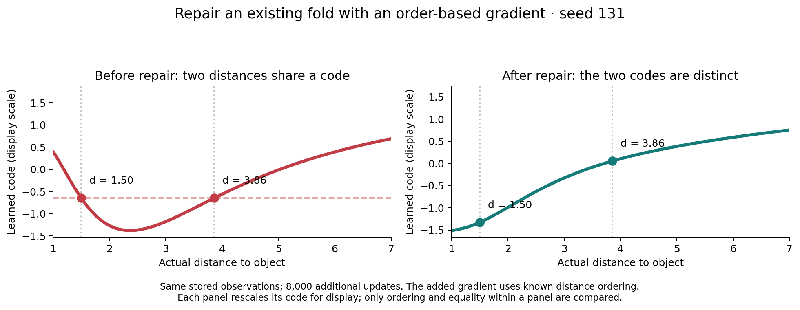
fold moves inward
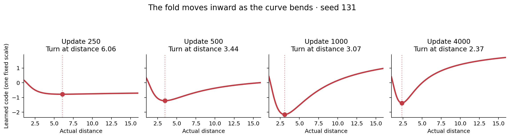
gradient results
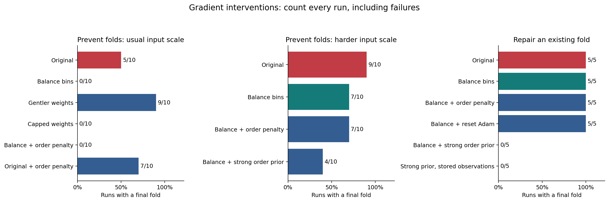
representation training
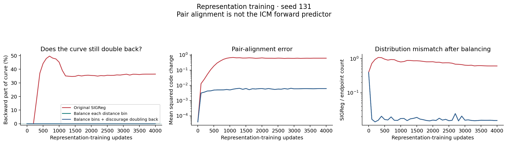
late fold repair
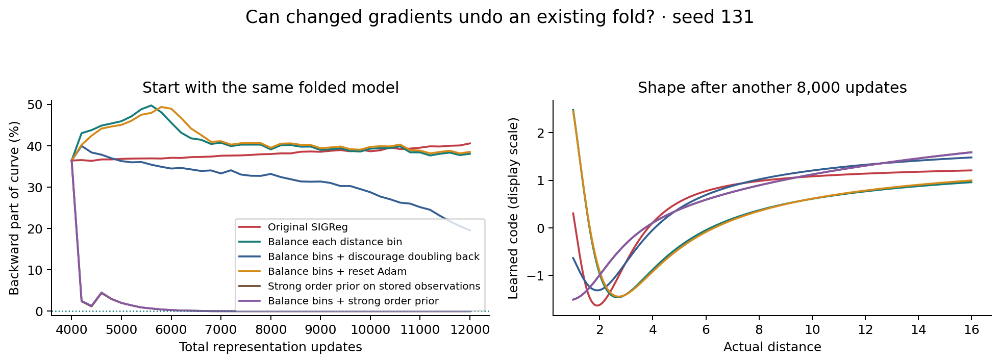
all original predictor runs
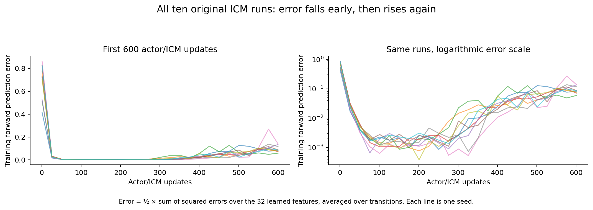
does predictor error vanish
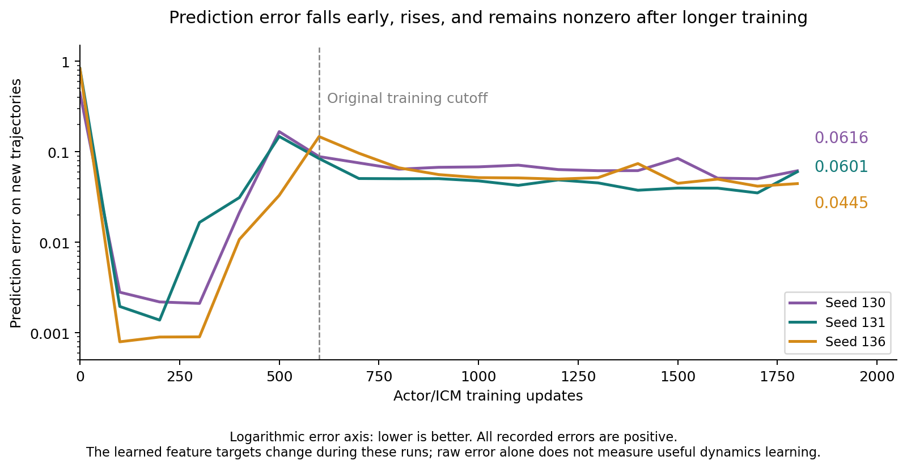
predictor error and moving targets
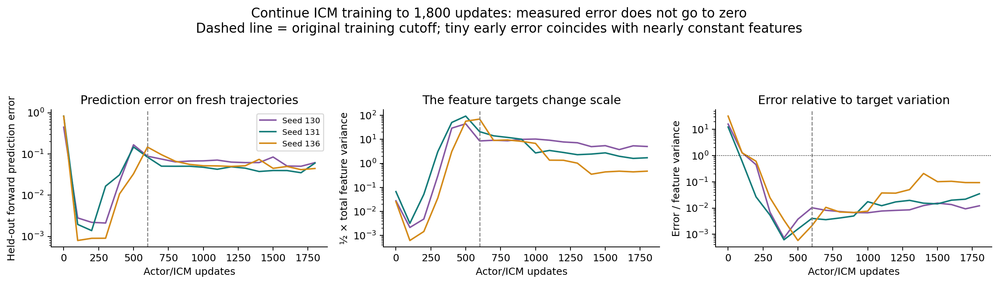
frozen target predictor
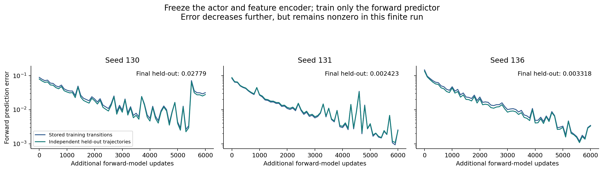
training and heldout predictor
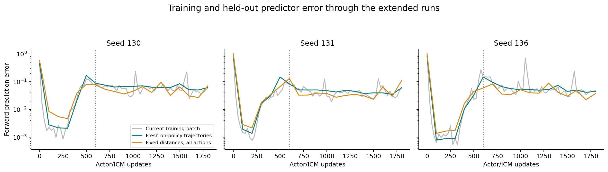